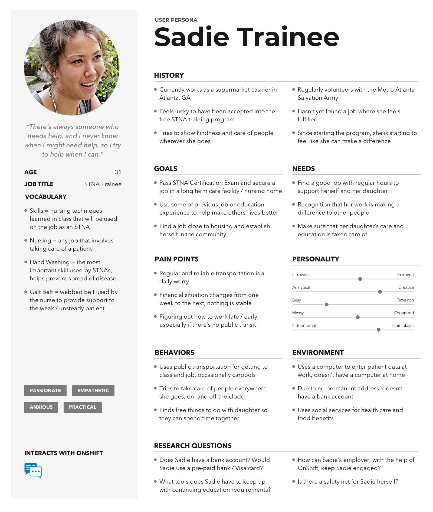
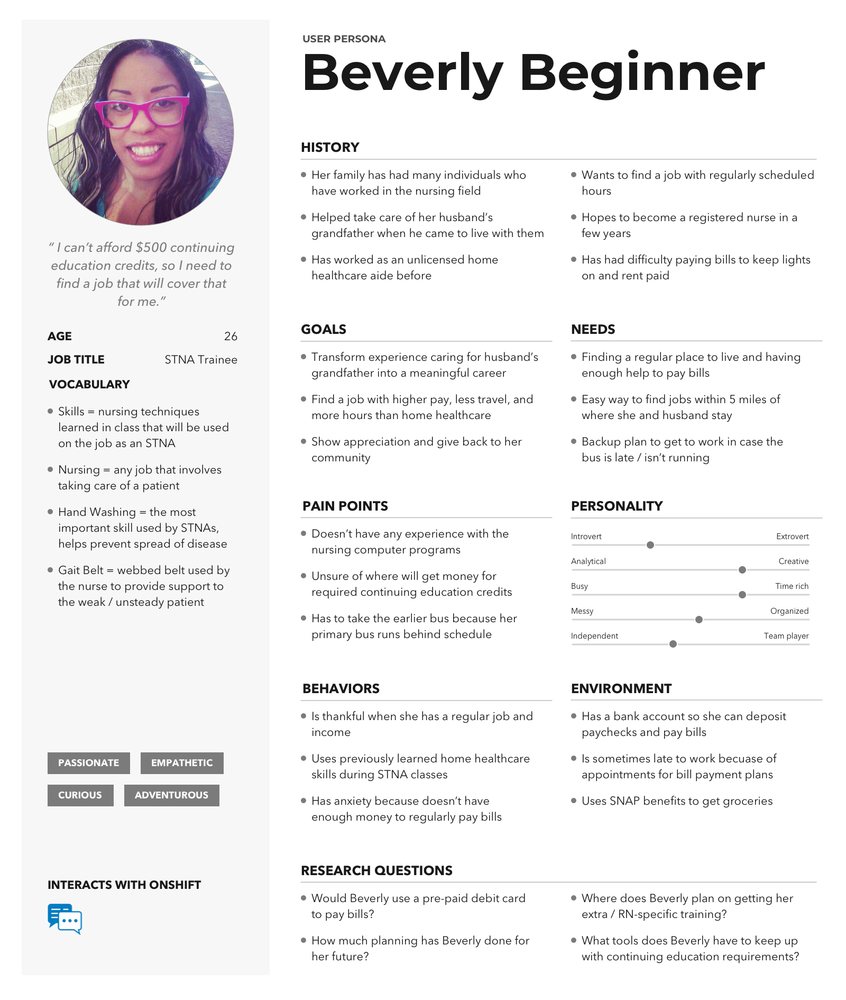
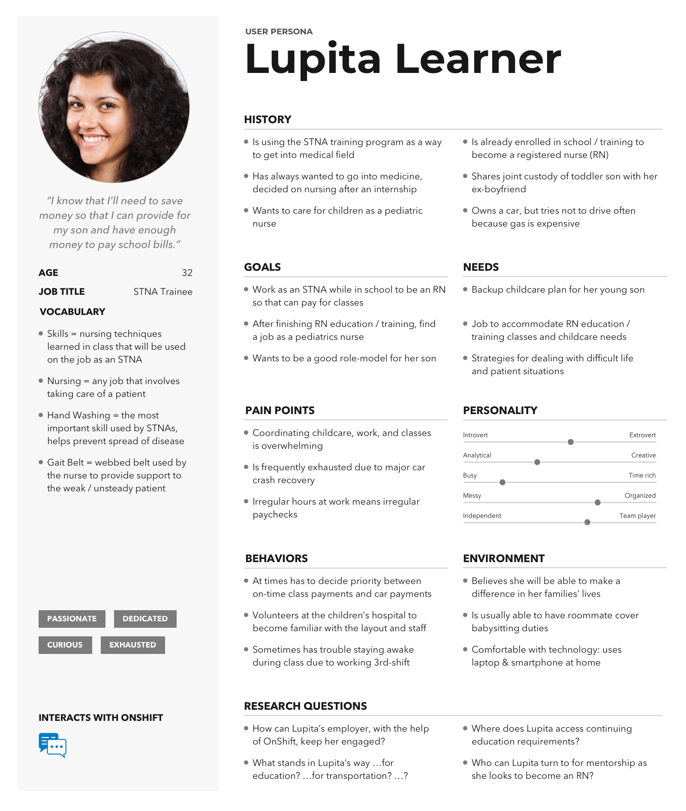

problem
At OnShift, we have some well-defined marketing personas, but we're lacking complete UX Personas and as a result sometimes have difficulties understanding for whom we're designing and building software.
The opportunity presented itself for us to meet with the instructors of a local STNA training program that offered a free 16-week class plus transportation to the class (if needed). We were keen to present a partnership proposal to the instructors and leadership of the program so that we might be able to help the program with some needed supplies, offer the students lunch and a gift card for 30 minutes of their time, and we would start to gain an understanding of the individuals who served as the front-line care givers for our customers.
actions
We were able to develop a partnership with one of the local STNA training programs and I was asked to lead the relationship management and research effort with interview assistance from our Senior UX Designer.
The partnership agreement included:
- 4 meetings with the students: 2 during class and 2 after class,
- at the after class meetings, we would provide a $25 gift card and lunch to the students,
- we would make a donation to the training program to help support the program's mission, and
- we could gain access to the hardest to access persona group of our customers' employees.
Before meeting the class, I spent some time researching our existing marketing personas and meeting with our product owners to hear what it was that we didn't yet understand about our customers' employees - especially the front-line direct care staff. Based on what I heard from the product owners, I developed an interview protocol to help us understand the students' motivation and goals for taking this training program.
Meeting the Class
We met the 7-student class about 3 weeks into the 16-week class; we spent about 15 minutes at the end of one class period to introduce ourselves, our project, and its timeline to the STNA students.
During our first meeting, we were hoping that we would have 3 or 4 students sign up for 1:1 interviews; all 7 students signed up for 1:1 after class interviews.
Initial Interviews
About 2 weeks after our first meeting, we started the 1:1 interviews with each student and provided lunch plus a $25 gift card to each student for about 25 minutes of interview time.
Using my interview protocol, we successfully completed the first day of interviews and then regrouped to evaluate the success of the protocol in the real world and made some small improvements before continuing with the remaining 5 interviews.
Second Interviews
It's common for a short-tenure in the direct care industry and our product owners wanted to understand what motivates care givers to both get into the industry and how we could help our customers retain their employees. So the second interviews were written after the 1:1 interviews were given with the purpose of understanding a student's motivations, usage of technology, and evaluation of their week-long clinical rotations against their expectations.
Designed for 2 groups of students (of 3 and 4 students), the second interview was completed with just 2 of the 3 students who were still in the class at the time.
Unfortunately, we didn't get the diversity of opinions that we were expecting from this interview session.
Future Interview Sign-Ups
Surprisingly, we had 4 students at the program graduation who - when given the option of joining our ongoing research panel - enthusiastically provided their contact information and volunteered for ongoing product research.
results
After all the interviews had been completed - it was time to start reviewing the recordings and parse through the interviews with the purpose of finding themes. Using Tomer Sharon's Rainbow Spreadsheet, we were able to identify 3 distinct personas:
- STNA as a career: 
- STNA as a possible career stepping stone: 
- STNA while pursuing other nursing education: 
The exciting part of the compiling our results was presenting them to the product owners and development teams to help reinforce that we have real people that we're supporting when we build software, not just some poster on the wall with a stock image and generic description.
lessons learned
I was surprised at how much management the process of setting up interviews needed: we had agreed on the dates and times, but dealing with ordering and picking up lunch, plus the internal process of getting the gift cards wasn't something I had prepared for.
Overall, it was a wonderful experience and I am waiting for the management approval to continue with the partnership and set up the next round of interviews. In the mean time, there are some things that I can do to build on what we learned from the first class:
- there appear to be 3 groups of students (as mentioned in results section)
- the students from the first class seemed to be eager to join in an ongoing research group
- the program instructors seemed happy to share their experience as nurses and care-givers themselves - both with us and the students
- as much as providing a free lunch + gift card sounded like a good idea, in practice, it didn't
work:
- because we didn't ask the students to select a specific sandwich option, trying to figure out a lunch order caused a lot of stress for us
- in addition to determining the lunch order on my own, we had to pick it up on our way to the interviews - and sometimes the full order wasn't quite ready when we needed to leave
- the food was good, but the students couldn't eat during the interview because they were talking and answering our questions
- the extra cost of the lunch could be spent elsewhere, like future interviews
- OnShift has a process where we can request gift cards - so we don't need to first purchase them and then request reimbursement
next steps
I'm still advocating to management to continue with the partnership because we have unanswered persona questions - and are still missing contacts for STNAs who are working in the field; we have had conversations with just about everyone of our customers' employees, but the front-line care staff remain elusive during our phone calls and visits.
Once I have the approval to continue, I'll set up new interviews times with the program instructors and repeat the sign-up + interview process using the existing interview protocols to further build out our personas.